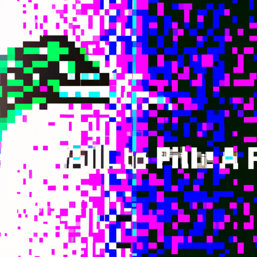

the future of Python and AI
In the tech world, the future of artificial intelligence (AI) is a hot topic. Python is one of the leading programming languages used in the development of AI solutions, and its potential to revolutionize the industry is immense. As an educator and programmer, I'm very excited by the advances being made in AI and Python.
Python has become increasingly popular in the AI world due to its versatility and simplicity. Python is a interpreted language, meaning that it is easy to learn and use. It also has a broad range of libraries and packages that can be used to develop AI solutions quickly and easily. Furthermore, Python has the ability to connect with other programming languages, allowing data scientists to quickly create powerful AI systems.
AI is evolving rapidly, and many developments have been made in recent years. From natural language processing, to gaming and robotics, Python is playing an increasingly important role in the development of AI solutions. AI is also becoming more accessible to the masses, with numerous libraries and packages available for users to get started quickly and easily.
In the future, AI is expected to continue to progress and evolve, and Python is likely to remain at the forefront of this progress. As AI becomes more widely used, the demand for Python instructors and developers is expected to rise significantly. As a Python instructor, I'm looking forward to the future of AI and the potential it holds for Python.